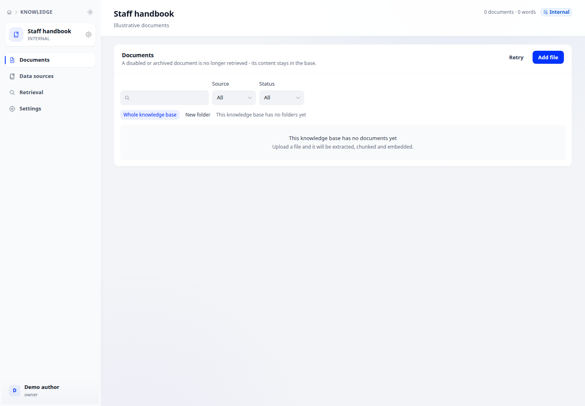

Manage documents and chunks
Track ingestion, inspect original documents and manage chunks used for retrieval.
Where to start
Track ingestion, inspect original documents and manage chunks used for retrieval.

Steps
- Open Knowledge, select a base and open its document list. Upload files or use a connected source.
- Track processing status; open a document to inspect its original content and extracted chunks. Read any processing error before retrying.
- Edit chunk content or keywords, and enable or disable chunks for retrieval. Review the selection before bulk actions.
Check the result
Test retrieval with a relevant question to confirm the intended chunk is found. External knowledge bases do not store document lists here.